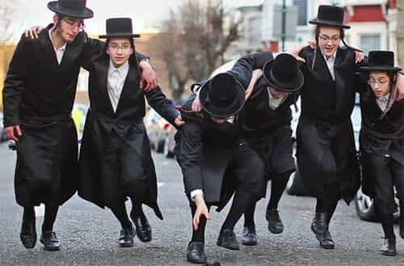

André is a young European who left his decaying country in 2012 for greener pastures. He enjoys exploring subterranean places, reading about a host of interconnected topics, and yearns for Tradition.


Lately ROK writer Corey Savage has penned a couple of pieces about the negative sides of anger. His pieces exude hard-earned, experience-based wisdom. It is very easy, when one is red-pilled and wants more than riding the tide of the dark age, to get angry at something: the daily news, the hegemony of cultural Marxism, how the so-called “far right” gets beaten down by the forces of the system at each election, the ever-increasing number of non-whites in the streets, the degeneracy of women… in a world as ugly as the current mainstream, sources of anger are potentially infinite.
The system knows well about the downsides of anger and mercilessly plays on them. It maintains a lax policy on black-on-white and anti-Trump violence in order to force whites into defending themselves, then points finger at their supposed “violence.” It constantly demonizes innocent people and sacrifices them on the SJW altar, and if said people show a righteous anger against their attackers, this very anger will be singled out to reinforce the narrative that locks them down into the villainous role. In short, the system provokes in us an anger it is able to recuperate and turn back against us later.
Getting angry at people or things we have no power over, getting provoked into flaring up publicly at something and then being labelled the violent one, are important downsides. Anger is one of the most potent emotions we are capable of, and for this reason one of the most dangerous. Yet it has a positive aspect as well. If one is able to dominate one’s anger, this burning emotion can prove immensely useful. Just like fire appears beautiful and warm when we cast it into a chimney or between small rocks, anger is part of our makeup because there are circumstances when having it—and using it wisely—can turn the tables to our advantage.
Anger gives an energy boost and a sense of drive. During an athletic performance, the emotion can endow us with the extra momentum we need just when we need it. This is something I grasped firsthand. While swimming, at the end of an extended race, I would almost automatically think of a person who greatly disrespected me in the past, then feel the extra drive and pulse coming straight from the heart. Likewise, while running the last miles of a marathon, I became angry against the race organizers—for reasons that seem silly in retrospect, but it actually helped me to maintain the proper pace until the end line.
Anger makes us hot, in the proper, physical sense. If you get really angry at something, even if you manage not to express it by words, you will feel a new heat growing into your body, perhaps making you red-faced. This can be useful in any situation when you actually need some heat.
For example, taking cold showers brings a variety of health benefits, including increased energy during the day, more resistance to cold in general and an increased testosterone, but is also really difficult if you are not accustomed to cold water. When I started taking cold showers, I quickly noticed that an extra dose of heat from the inside was necessary to withstand the thermal shock, and started to do some black metal-style singing to help awake the “inner fire.” This is not as silly as it may sound. Black metal-style singing is a surrogate of real anger, and it works even better when associated to real anger on the moment. So, summoning some bad memories and growling about them actually helped me to generate heat when needed and get past the initial thermal shock of cold water.
When someone is actually threatening you, whether physically or for example by attacking your reputation, anger is a normal and spontaneous answer. The difficulty lies in modulating the externalization of anger as to express it in just the right way.
Sometimes looking at the other guy in the eyes and speaking with a slower, deeper voice does the job. Sometimes doing a coarse joke about a shameful flaw the attacker has is enough to dispel any stain from your reputation. Sometimes you have no other solution than punching hard—and perhaps running straight after. Just like when you are gaming a girl, the key consists in modulating, which implies an awareness of the situation. This is something one gains by experience, and here as always, anger ought to stimulate and perhaps determine what you look at, but ought not to compel you into doing something you might regret later.
Ever been shamed or ridiculed by a teacher, a trainer or some other specific field-related authority telling you that “you will never do [whatever practice] correctly, you lack the potential”? This kind of psychological blow usually results in two types of consequences: either you disengage from said field, feeling that dwelling in it would be a waste of time and energy, or you work twice harder to grow genuine abilities in the field and show the teacher wrong. In the latter case, you are usually angered against the teacher who rejects you and are motivated by the idea of growing such abilities that he will be forced to give you due recognition.
Now, if the teacher is really disagreeable and maintains a harshly critical attitude against his student, simply staying in the course might be an ordeal. But in the end, whether you succeed at obtaining final recognition or not, if you manage to better yourself in the field and/or maintain calm under a heavier pressure, you win.

Some emotions are good at inspiring works of art. Many of these emotions are not agreeable and compel one into using art as a way to express them without getting (too) obnoxious. A lot of poems deal with inaccessible girls, tragic love stories, and so on. The motivational role of basically negative emotions is implicitly recognized into the dictum “stay hungry, stay foolish”—if you are too content with what you have, you won’t be motivated into having more or better.
Likewise, emotions that can be channeled into drive can also be used to fuel a work of art. How many rappers became so and blamed whatever they were angry at—often, but not only, the police—in their lyrics?

This applies when the anger is not yours alone, but shared by a group of like-minded people you belong to. When shared, anger can fuel solidarity, motivating the like-minded to help each other. The basic condition for this to work is that everyone must remain in agreement on what to be angry at.
Groups that managed to use this feature of anger to survive, as it tightened the social bonding between their members and reduced individualism, might be found amongst the Jews. As the specialist of Judaism Kevin MacDonald put it,
Non-Jews have a difficult time fathoming Jewish communal memory. For strongly identified Jews, the “vilely discriminatory” actions of immigration restrictionists are part of the lachrymose history of the Jewish people. Immigration restriction from 1924–1965 is in the same category as the Roman destruction of the Temple in 70 A.D., the marauding Crusaders of the Middle Ages, the horrors of the Inquisition, the evil of the Russian Czar, and the rationally incomprehensible calamity of Nazism. These events are not just images drawn from the dustbin of history. They are deeply felt images and potent motivators of contemporary behavior. (Culture of Critique, p.x)
After all, is there anything better than negative emotions targeting non-members of the group, or a specific enemy group, to maintain the cohesion of one’s group? This trick seems to have been (perhaps subconsciously) used by Jews since long ago.
Shared anger works well in politics too. A dictum says that politics are mostly fueled by greed and envy, which might be a bit simplistic but certainly not far from the truth. During the eighteenth century, the English Whig party already had the upper hand over its Tory counterpart, and the Whigs were way more prone to political anger: they easily accused the Tories of being “traitorous,” “antipatriotic” or “against liberty”—which was one of their main totem poles—whereas the latter tended to submit or negotiate. Today, one can notice the same phenomenon, as the self-righteous cultural Left always pushes its agenda farther while the conservative establishment keeps bowing as long as its own income keeps coming.
SJWs are the prime users of political anger and self-righteousness. They will do anything out of mob mentality and hatred against “straight white males.” Notice in passing the Left’s double standard: for decades, it stirred anger at selected audiences—workers through “class struggle” and “class oppression,” later so-called “minorities” through identity politics—by constantly repeating a narrative where said audiences happen to be unfairly oppressed, but attack us if we show the least sign of anger.
Memories that are associated with anger tend to remain alive much longer than emotionally neutral ones. This feature of the human mind is used by groups that maintain a collective identity through a narrative where they play the role of a formerly persecuted minority. Their memories, even if more constructed than genuine, remain alive for a very long time, and can do so for centuries.
Men of ability who keep resenting their past tend to both remember it fondly and derive from said memory a constant sense of drive to succeed more and more. In a sense, traumatic, angering memories may show useful, whether we extract valuable lessons or maintain a sense of drive out of them: whoever has them might be advantaged, but should also be wary of not ending up consumed by them.
As disagreeable as it may be, anger is also a source of motivation, drive, and physical heat. If sublimated and channeled appropriately, it can give us exactly what we need to succeed. If shared, it can help to bond and express solidarity with like-minded fellows. Alas, if it overflows beyond the borders of publicly acceptable behavior or over petty objects, anger can also backfire and burn us more than anyone or anything else.
The double-edged nature of anger has long been used against us. The “far right” is basically nothing else than a Leftist labeling, used to finger point specific people, views, facts… as deserving public condemnation without reflection. For long, whites have been fleeing and bowing when they were threatened by labels such as “far righters,” “racists” and so on, out of fear to be the next victims of SJW anger and other whites’ cowardice. Conversely, the Left that uses SJW and “minority” anger against us loves to provoke us into getting publicly angry in order to represent us as negative and obnoxious.
It is time for us to outsmart whoever wants us shattered by making an intelligent use of our emotions. This applies both to our individual, personal lives, and to pan-masculine and pan-European solidarity. It is okay, fair, and even necessary to be at least minimally angry at the present world order. The pseudo-wise withdrawal from the world is often not much more than a legitimization of cowardice.
As long as neomasculinity does not have the upper hand, long live the “angry white male”! Just be careful to remain on top of your anger, as a rider on his horse, and never the opposite: if you don’t master your own anger, someone else will, and he will quickly turn it against you.
Read More: 30 Facebook Pictures That Confirm Red Pill Truths